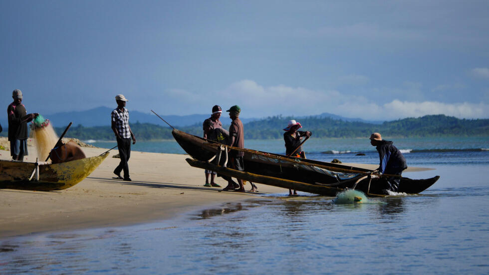

Meteo Alert Api - Improving Fishermen's Safety
Meteo Alert is a project I developed as part of a mandatory one-month international experience in Madagascar. It was designed to enhance safety for local fishermen by providing daily weather alerts and weekly forecasts, tailored to their specific needs and the realities of their environment. Unlike generic systems, this project took into account the unique challenges and conditions faced by the community.
Understanding the Local Context
Before diving into the technical side, I spent time collaborating with fishermen and the Lakana Tsara association to define what "risk" means for them. Unlike European standards, the criteria were based on practical concerns such as wind direction, wave height, and the specific vulnerabilities of traditional Malagasy fishing boats. This collaboration ensured the system was both practical and relevant.
Automated Data Collection and Risk Analysis
To provide accurate and reliable forecasts, the system integrates with the Storm Glass API. Every day, it retrieves detailed weather data—wind speed, wave height, current speed, and direction—across multiple strategic points near the fishing areas. This data is processed using a custom algorithm I designed to classify risks into:
- Color flags: Green, yellow, or red, based on wind speed thresholds.
- Black or black/white flags: Indicating high-risk situations due to strong offshore winds.
The system automatically generates a CSV file for analysis, ensuring a smooth and efficient process for daily operations.
Communicating with Fishermen
The next step was ensuring this information reached the fishermen in a timely and clear manner. Using the Orange SMS API Madagascar 2.0, the system sends:
- Weekly summaries: Every Sunday, fishermen receive a concise forecast for the week ahead.
- Urgent alerts: In cases of red or black flags for the next day, immediate warnings are sent to help them prepare or stay onshore.
The SMS messages are tailored to be concise and easy to understand, ensuring accessibility for all recipients.
User-Friendly Web Interface
To make the system easy to manage, I developed a simple yet secure web interface. Key features include:
- Login security: Only authorized administrators can access the platform.
- Contact management: Adding or removing fishermen’s phone numbers is straightforward and intuitive.
- Automation: Once set up, the system runs independently, requiring minimal intervention apart from recharging the SMS API credits.
The platform is hosted on Heroku, ensuring continuous availability and a hassle-free deployment process.
Technical Achievements
Every aspect of this project—from API integration to algorithm development—was handled independently. Highlights include:
- Designing a robust algorithm to classify risks based on real-time weather data.
- Implementing seamless API communication for data retrieval and SMS delivery.
- Developing an intuitive and scalable web interface for the Lakana Tsara team.
Despite working within the constraints of a one-month timeline, the project delivers a fully functional and sustainable solution that addresses a critical safety issue.
Flexibility and Scalability
While the system currently sends weekly forecasts, it can easily be adjusted to provide more frequent updates during high-risk periods, such as bi-daily reports. The architecture is flexible enough to accommodate additional features or expand to other regions.
Conclusion
Meteo Alert demonstrates how technology can be effectively tailored to meet local needs, blending advanced data processing with practical on-the-ground solutions. This project has not only improved safety for fishermen but has also empowered the Lakana Tsara association with a tool they can rely on for years to come.
For any questions or collaboration opportunities, feel free to contact me at alban.danet@efrei.net.